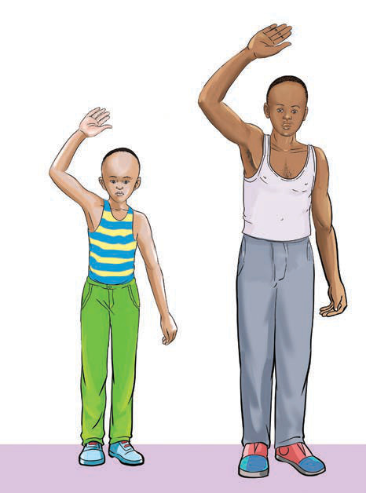

(b) Mabadiliko ya kimaumbile wakati wa balehe kwa mvulana
Wakati wa balehe mvulana huwa na maumbile kama yanavyoonekana au kuelezwa katika Kielelezo namba 8. Baadhi ya mabadiliko hayo ni kama ifuatavyo:
(i)
Kukua kwa korodani na uume.
(ii)
Kuongezeka kwa utendaji kazi wa tezi za jasho.
(iii)
Kukua kwa nywele za kwapani na kuzunguka sehemu za siri, kifua, tumbo na ndevu kwa baadhi ya wavulana.
(iv)
Kuongezeka kwa kimo na uzito.
(v)
Sauti kubadilika kuwa nzito.
(vi)
Kuota chunusi usoni kwa baadhi ya wavulana.
(vii)
Kupata ndoto nyevu.
(viii)
Kupanuka kwa misuli sehemu za kifuani na mikononi.
